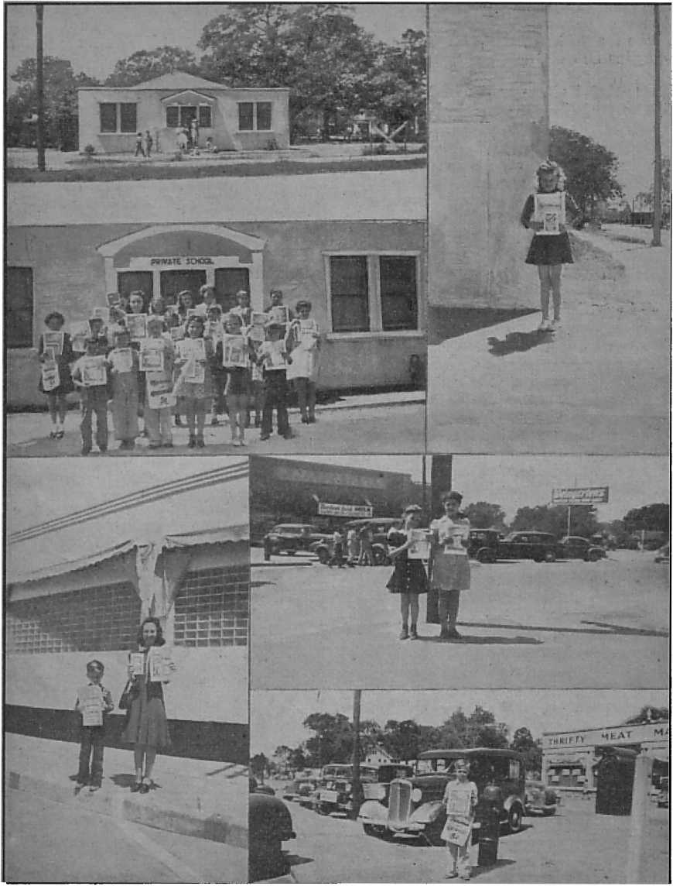

A splendid example of moral courage set by Supreme Court Justices Murphy, Black, and Douglas, reversing their former stand regarding enforced flag-saluting
“Shall Wipe Away All Tears”
“Think it not strange,” ye Canadians
Five Cents a Copy One Dollar a Year
Vol. XXIII No. 596 July 22, 1942
$1.25 In Canada and Foreign Countries
Published Every Other Wednesday
Contents
Changed Convictions Regarding Enforced
When the Chief Justice Stood Alone
Misconception About Supreme Court
The Bar Association Knew Better
“Thy Word Is Truth”
The New Government
“God Shall Wipe Away All Tears”
Houston, Texas, Kingdom School
Witnessing Before Rulers in Yugoslavia 22
Celebrating the Bill of Rights
Ramie May Come into General Use
Presenting “This Gospel of the Kingdom” 26 “Think It Not Strange,” Ye Canadians
Published every other Wednesday by
WATCHTOWER BIBLE AND TRACT SOCIETY, INC.
117 Adams St., Brooklyn, N. Y., U. S. A.
Editor Clayton J. Woodworth
Business Manager Nathan H. Knorr
Five Cents a Copy
$1 a year in the United States
$1.25 to Canada and all other countries
NOTICE TO SUBSCRIBERS
Remittances: For your own safety, remit by postal or express money order. When coin or currency is lost in the ordinary mails, there is no redress. Remittances from countries other than those named below may be made to the Brooklyn office, but only by International postal money order.
Receipt of a new or renewal subscription will be acknowledged only when requested. Notice of Expiration is sent with the journal one month before subscription expires. Please renew promptly to avoid loss of copies. Send change of address direct to us rather than to the post office. Your request should reach us at least two weeks before the date of issue with which it is to take effect. Send your old as well as the new address. Copies will not be forwarded by the post office to your new address unless extra postage is provided by you.
Published also in Greek, Portuguese, Spanish, and Ukrainian.
OFFICES FOR OTHER COUNTRIES
England 34 Craven Terrace, London, W.2
Australia 7 Beresford Road, Strathfield, N.S.W. South Africa 623 Boston House, Cape Town
Mexico Calzada de Melchor Ocampo 71. Mexico. D.F. Brazil Caixa Postal 1319, Rio de Janeiro
Argentina Calle Honduras 5646-48, Buenos Aires Entered as second-class matter at Brooklyn, N. Y., under the Act of March 3, 1879.
Notanda
Gun Barrels in Three Minutes
♦ It seems a shame that the nation that showed the world how to make airplane engines and automobiles should have to come down to showing them how to make guns; but that seems to be the way it is working out. The airplane was invented in America, and the engines that drive them in every part of the world are of American design or imitation. While Uncle Sam was going places with automobiles, planes and radios, Germany and Japan were bending all their energies toward getting ready to turn the world into a slaughterhouse. So much for the general setting. When Uncle Sam was forced into the war it took her mechanics an hour and three-quarters to rifle a gun barrel. That is 105 minutes. In less than three months they were doing it in 3 minutes. These birds that are bent on slaughter think they know it all. Indeed Japan’s motto is, “The sword conquers all things.” How like the Devil! At the moment it looks dark. But Satan’s rule will end, and in utter humiliation for all who have and manifest his spirit.
Fine Work on Airplane Motors
♦ The adjustments on the best airplane motors are so close that the machine work on the parts that go into them must be done in shops that are air-conditioned at a fixed temperature, and so designed that rays of sunlight may not fall upon the tools or lathes in which the parts are made. A scratch on a gear may make it unusable. When the gears are shipped they are wrapped in the softest absorbent tissue that is obtainable.
Winter Planes to Alaska
♦ The inauguration of a summer plane service to Alaska proved such an immediate success that the service will be continued throughout the year. The flights are twice a week, weather permitting.
“And in His name shall the nations hope.”—Matthew 12:21, A.R.V.
Volume XXIII Brooklyn, N. Y., Wednesday, July 22, 1942 Number 596
Changed Convictions Regarding Enforced Flag-Saluting
NO ONE can question the sincerity with which Justices Murphy, Black, and Douglas, of the United States Supreme Court, concurred in the 8 to 1 decision in the Gobitis case that it was lawful for the Minersville School District to compel the Gobitis children to salute the American flag or be expelled from school. They thought they were doing right. Now they know they were , wrong.
Great concern was aroused among lawyers, teachers, editors and others who are interested in preserving American liberties when on June 8, in expressing themselves against a majority opinion that Jehovah’s witnesses are peddlers, because they take the message of the kingdom of God from door to door in book form and accept contributions to aid in covering the cost of the same, they went on record in these words:
The opinion of the Court sanctions a device which in our opinion suppresses or tends to suppress the free exercise of a religion practiced by a minority group. This is but another step in the direction which Minersville School District v. Gobitis, 310 U. S. 586, took against the same religious minority and is a logical extension of the principles upon which that decision rested. Since we joined in the opinion in the Gobitis case, we think this is an appropriate occasion to state that we now believe that it was also wrongly decided. Certainly our democratic form of government functioning under the historic Bill of Rights has a high responsibility to accommodate itself to the religious views of minorities however unpopular and unorthodox those views may be. The First Amendment does not put the right freely to exercise religion in a subordinate position. We fear, however, that the opinions in these and in the Gobitis case do exactly that.
Those familiar with this subject are, of course, aware that when Justices Murphy, Black and Douglas announced their adherence to the above statement it meant that they had swung squarely over to the opinion of Mr. Justice Stone, now the Chief Justice, who endeared himself to all liberty-lovers by his one-man stand against his eight colleagues in the Supreme Court when the Gobitis case was before that body. Some of the points in his minority opinion are presented to refresh the memory of those who have forgotten what he said:
... by this law the state seeks to coerce these children to express a sentiment which, as they interpret it, they do not entertain, and which violates their deepest religious convictions.
... it is a long step, and one which I am unable to take, to the position that government may, as a supposed educational measure and as a means of disciplining the young, compel public affirmations which violate their religious conscience.
. . . there are other ways to teach loyalty and patriotism, which are the sources of national unity, than by compelling the pupil to affirm that which he does not believe and by commanding a form of affirmance which violates his religious convictions.
The Constitution may well elicit expressions of loyalty to it and to the government which it created, but it does not command such expressions or otherwise give any indication that compulsory expressions of loyalty play any such part in our scheme of government as to override the constitutional protection of freedom of speech and religion. And while such expressions of loyalty, when voluntarily given, may promote national unity, it is quite another matter to say that their compulsory expression by children in violation of their own and their parents’ religious convictions can be regarded as playing so important a part in our national unity as to leave school boards free to exact it despite the constitutional guarantee of freedom of religion. . . . This seems to me no more than the surrender of the constitutional protection of the liberty of small minorities to the popular will.
... it would seem that legislation which operates to repress the religious freedom of small minorities, which is admittedly within the protection of the Bill of Rights, must at least be subject to the same judicial scrutiny as legislation which we have recently held to infringe the constitutional liberty of religious and racial minorities.
The job of switching over from freedom of worship of Almighty God to compulsory worship of the state is causing many an anxious moment among thinking people in America in these days. The Louisville Courier-Journal is one of the 171 leading newspapers of the United States that consistently stands for religious liberty and well understands and supports the position taken by Jehovah’s witnesses. Two days after the admission of Justices Murphy, Black and Douglas that they now know they were wrong in the Gobitis case it said editorially:
Jehovah’s witnesses are making quite a record for judicial construction of religious liberty, one of the “vital rights of minorities and individuals”, which Lincoln said “are so plainly assured ... in the Constitution that controversies never arise concerning them”.
They have arisen, nevertheless, and they divide the Supreme Court five to four on what Chief Justice Stone, dissenting, charges is a second infringement of minority rights by the court. The decision affirms the constitutionality of city ordinances levying a license tax on Jehovah’s witnesses for selling religious tracts.
More significant than the particular issue involved in this case, however, was the recantation of the other three dissenting Justices, Murphy, Black and Douglas. They had concurred in an eight to one decision, reversing a Pennsylvania Federal District Judge and Circuit Court of Appeals, to uphold the compulsory flag salute in schools. Now they take advantage of “an appropriate occasion” to agree with the Chief Justice that the flag salute case was “wtongly decided” and this “but another step in the same direction”, tending to “suppress the free exercise of a religion practiced by a minority group”.
The three Justices must have been profoundly moved by their convictions to make public their change of views when the country is at war and patriotic fervor apt to run to extremes. It is a reassuring exhibition of allegiance to American principles in time of stress, and more impressive for the fact that Justice Murphy is a devout Catholic whose faith has been subjected to scurrilous abuse by peripatetic witnesses.
The two years intervening between the two cases have furnished object lessons to rationalize the practical aspects of the question. The Justices have seen conscientious objectors excused from defending the flag while equally conscientious little objectors to obeisance to any earthly symbol were expelled from school for merely refusing to perform a perfunctory gesture in front of it. Meanwhile, a New England State court balked at the reductio ad absurdum of a similar statute. The judges also declined to obey it. They just couldn’t bring themselves to enforce the truancy law against children willing to attend or to adjudge them delinquent for obeying their parents.
This incident introduced cold logic into a debate on the symbolic character of the flag. It was in defense of the flag as a symbol of the nation’s might and the rights it guarantees that Justice Frankfurter, writing the majority opinion, affirmed legislative power to require the salute as a means of promoting “attachment to the institutions of the country” and “training children in patriotic impulses”. It was in defense of the flag as a symbol of the “freedom of conscience” that Chief Justice Stone denounced the coercion.
The law in operation, at least, vindicates the Chief Justice’s contention that the court was dealing with something more fundamental than pedagogical theories. Obdurate disobedience to it and the acceptance of the consequences demonstrate the conscientiousness of the offenders^ And the Chief Justice has gained enough recruits on the bench to indicate that this “vital right” isn’t finally disposed of, even though the great Lincoln might not have been able to see how a controversy could possibly arise over it.
The Supreme Court is not a law-making body. It does decide if national, state or local municipal laws are in harmony with the Bill of Rights. Being human, it makes mistakes, as Justices Murphy, Black and Douglas now courageously admit. Localities affected by the decisions necessarily make the same mistakes. But a Supreme Court decision that school boards may require students to salute the flag does not mean at all that any school board must do so. No municipality must abuse Jehovah’s witnesses.
Another thing: No judge is compelled to follow the Supreme Court into error when it chances to make a mistake. He may stand for what is right and just, even if later he be rebuked for it. The rebuke may in time be changed to an apology, and a public one at that. Only six days before Justices Murphy, Black and Douglas made their public acknowledgment of previous error Judge J. Harold Brennan, of New Cumberland, West Virginia, in a 13-page opinion, acquitted five of Jehovah’s witnesses of charges of refusing to permit their children to salute the flag while attending public schools. Referring to the pledge of allegiance to the flag, portions of the opinion in the case follow:
As an individual I heartily agree with every word quoted. As the court, I cannot accept this conclusion that no religious question is involved, simply because the judge of the court cannot stretch his imagination to cover it. The answer to this statement is that many imaginations have been stretched so as to construe this as a religious rite. The moment any court takes to itself the right to hold a religious view unreasonable, that moment the American courts begin to deny the rights of religious freedom. The very purpose of our guarantees of freedom of religion is that unpopular minorities may hold views unreasonable in the opinion of majorities.
I, personally, agree that there is nothing whatsoever of a religious nature about this salute of the flag. I know of no definition of allegiance that even connotes worship or adoration. Furthermore, to hold the simple language of the Second Commandment to extend so far as to include within its provisions the American flag as a graven image of anything, “that is in heaven above, or that is in the earth beneath, or that is in the water under the earth,” or to hold that this flag salute is bowing down to or serving such an image or likeness, is completely beyond my comprehension. The difficulty is that, when all this is said, I.can think of many beliefs incorporated in religions in various parts of the world that are just as incomprehensible to me as this one is. To all of these we guaranteed freedom.
We have to take into consideration what this decision means. A finding of guilty would mean that these defendants must either leave the state of West Virginia or, during one school year, incur possible sentences of one hundred days for every week of the school year, a sentence of twenty days for each day’s absence. As a possible alternative thereto, the child could be sentenced to Pruntytown or Salem (state reformatories), for we cannot hold parents responsible without saying that the child is habitually truant. In this connection, if one will take the trouble to examine the cases he will learn therefrom that the belief of Jehovah’s witnesses is this: A person saluting the flag will be slain at the Battle of Armageddon, thereby incurring eternal spiritual death.
This shows that these little children have been taught to fear. It is not believed that the American or the West Virginia constitution permits forcing on a child the choice between a reform school and the hereafter of the damned, even though the second choice exists only in the child’s imagination.
As indicated by the possible sentences, what this court is asked to do is to force children, indirectly, to do something against the consciences both of themselves and their parents. This has not been done in America hitherto; we shall not begin it here.
The finding is “not guilty”.
Many people never stop to consider for one moment the reasons for and against saluting the scores of kinds of flags now floating in every part of the world. In a vague way the common man is led to believe that a government must be protected and if all the children salute its flag that government will be safe; that subversive organizations must be fought and that non-saluters are subversive, no matter what they believe; that if children have the jail doors staring them in the face they will salute and that will make them patriotic; that if they can be forced to salute, then they will not become Jehovah’s witnesses and it will be a distinct gain to the community if there is nobody in it who reverences the Creator. They might not express these conclusions in this way, but that is the essence of what the arm-swingers believe.
The facts are that true patriotism can not be created by legislation; respect for the flag can not be forced; love of country can not be taught with a club; hypocrisy is not patriotism; respect for the country should be taught through educational processes; three of the men that helped make flag salute laws possible now say they made an error thereby, and so they did; that flag salute laws are impossible to enforce; they are an entering wedge to Fascism; they are designed to make criminals of Jehovah’s witnesses, and it is admitted by the Supreme Court that the laws are particularly aimed at the witnesses and nobody else; flag salute laws set up machinery to suppress freedom of speech, freedom of worship, and freedom of conscience, and they set up tnachinery -which can be used to persecute innocent people.
The American Bar Association in the first place warned the Supreme Court against adopting this religious ritual; assured them there was no need to recommend such legislation; that it would be new to America to compel a particular form of expression such as a flag salute; that a compulsory flag salute is a thing very different from a.voluntary one; that compulsory salute legislation is void because it unjustifiably infringes upon the liberty of an individual, and that the compulsory flag salute cannot be sustained on the ground that public-school education is granted as a matter of grace so that the requirement, even though arbitrary and capricious, can be enforced by expulsion from the public school.
The Bar Association pointed out that neither legislatures nor courts have the power to declare that a given practice does not and can not carry a religious significance, and that a salute must be considered a patriotic ceremony which cannot have any religious significance; they could not see that the overriding of any person’s religious belief is essential to the public interest; they wanted to know what would happen if laws were passed compelling all adult persons to salute the flag; they wanted the court to back out of the idea that any official action whatsoever can determine whether or not a particular ceremony carries a religious significance; they wanted to know what would happen if the state were to require everybody to give a particular form of salute at a set time each week.
A year after Justices Murphy, Black and Douglas made their error in the G-obitis case, and a year before they admitted that such was an error on their part, the Bill of Rights committee of the Bar Association reviewed the matter and said that no decision of recent years in the field of civil liberty had aroused so much informed discussion and “it is interesting to note that the critical comment has been largely adverse to the soundness of the decision”.
It is a great temptation to produce some of the immense volume of adverse comment that is now flowing through court decisions in state and federal courts and in the newspaper offices of the country, but it seems best to limit this article by giving two selections.
The Chicago Sun’s acrid comment first:
Liberty is lost, usually, by people who do not know they are losing it. Liberty is destroyed by people who do not know they are destroying it. The Supreme Court this week undermined freedom of religion and, in doing so, established the basis for knocking out freedom of the press.
And the complete editorial of the Baltimore Sun, June 10, 1942, which follows. Experience shows that the Baltimore Sun continues to hold the position accorded to it by a vote of the American Society of Newspaper Editors as the best-edited paper in the United States. This editorial appeared in its issue of June 10, 1942:
Four for Freedom
Some of those who have been following the reasoning of the new members of the Supreme Court may have been tempted to chuckle yesterday. They read that Justices Black, Douglas and Murphy had reversed themselves in dealing with cases arising from the efforts of local authorities to restrict and regulate the curious religious sect known as Jehovah’s witnesses.
On June 3, 1940, these three justices joined five others in upholding the school authorities of Minersville, Pa., who had expelled children of the sect because, on religious grounds, they refused to salute the flag. At that time only the present Chief Justice stood out in support of the theory that the religious freedom guaranteed in the Constitution protected the children in their refusal to salute the flag. On Monday the Supreme Court acted on cases involving local ordinances in Alabama, Arkansas and Arizona which taxed ministers of the sect who distribute pamphlets. The question was whether these ordinances invaded the religious freedom guaranteed in the Constitution. In deciding the cases, Justices Black, Douglas and Murphy joined Chief Justice Stone on the minority side of a 5-4 decision, and added a plain statement that they erred when they joined the majority two years ago.
At first glance the reversal of position by the three justices looked rather like an example of judges learning the job as they go along. There has been a tendency upon the part of many of Mr. Roosevelt’s appointees to the bench, including some appointees to the Supreme Court, to be contemptuous of “abstract principles” and to decide eases in accordance with what seemed to the judges to be “right” and “just” in each instance. That, of course, is one of the easiest ways in the world to convert the judges into lawmakers. It is one of the easiest ways to convert the courts into the super-government which Mr. Roosevelt said the old courts had become. It is one of the easiest ways to pass on to judicial dictatorship and on to judicial tyranny. Gradually, this fact has dawned on some of the new judges, and they have been learning more about( “principles” and paying more attention to them.
But, in Monday’s decision, it seems probable that it was not sudden realization of the value of “principles” that moved the three justices to reverse their position of June 3, 1940, so much as discrimination between principles. Religious freedom is a basic principle. But it is conditioned by another basic principle—order in the community. Religious freedom does not guarantee a man the right to practice his religion in a manner that grossly disturbs the orderly life to which all other men are entitled. Public authorities, at times, must seek a working balance between the two principles. And this results in the courts being called upon to decide whether the working balance has been preserved—whether, in practice, the assertion of the principle of order has led to unwarranted invasion of the principle of religious freedom. That was the issue in all the cases affecting Jehovah’s witnesses.
In the first case, the only member of the Supreme Court who held that the public authorities were carrying the principle of order into an undue invasion of the principle of religious freedom was Harlan F. Stone, the one-time ^Morgan lawyer” who was a pillar of the old liberal minority in the preRoosevelt court. He held that the children of this eccentric and despised sect were within the religious freedom guaranteed by the Constitution to the humblest when they refused to salute the flag. He held, in effect, that no requirement of public order compelled the Minersville school authorities to limit the children’s exercise of their rights under the guarantee. In the cases decided on Monday, three of Mr. Roosevelt’s neo-liberals came around to the viewpoint of the one-time “Morgan lawyer”. They accepted his position in the old case, while joining his position in the later ones.
For our part, we applaud them. Religious freedom is too precious ever to be limited in the name of public order unless the need is clear and compelling.
Aviation
An Awakening at West Point
♦ Is it possible that the army and navy still haven’t awakened to the primary place the airplane has taken in this war ? The evidence would fill books. Pearl Harbor. Crete. The way the Germans used air protection to get their battleships through the Straits of Dover the other day. The cry of everybody in the Far East for planes. Cecil Brown reports from there that 30 flying fortresses six weeks ago might have changed the story. Dutch officials have begged our government frantically for just a few planes— far less than a month’s production. Harold Guard, the United Press correspondent, tells us how brave British troops had to lie in the mud at Singapore while Japanese plants machine-gunned them with not a defending plane in the area. Every dispatch from out there cries for planes. They are not asking for battleships. Battleships are no good without planes to protect them, as the British have finally discovered. I’m not competent to marshal all the evidence that exists.
At Pearl Harbor our people were looking for sabotage, for submarine attack, for naval attack, but they don’t seem to have thought of the possibility of air attack—so the Roberts report tells us. Just a few days ago General Marshall said that pilot training would be added to the curriculum at West Point within a month. They apparently hadn’t bothered with air much before, and had gone on turning out ground-bound officers in the midst of a war in which air had become the key to most decisive actions. —Raymond Clapper, in the New York World-Telegram, February 18, 1942.
The Plastic-Plywood Planes
♦ It is claimed for the plastic-plywood planes that the material is stronger than steel; that the glue impregnates the wood, preventing warping and buckling, and that the elimination of rivet heads and overlapping plates reduces the air drag. The plywood surface resists oil, water and fire, and the bullet holes are clean instead of flowering, which enables repairs to be made quickly and efficiently. A further advantage is that this form of plane makes good use of the services of carpenters, cabinet makers and other types of woodworkers.
Radio Guidance of Model Planes
♦ At Wright Field, Day ton, Ohio, a model airplane without any aviator aboard taxied out onto a runway, took off into the wind, performed figure eights and S curves at a 300-foot altitude, and taxied back to the feet of the judges. Seems uncanny, doesn’t it? It was all done by radio. At the same exhibit another plane, this time with an aviator aboard, took a power dive from 500 feet, plunged to within twenty feet of the ground, then climbed steeply, and at 300 feet executed a perfect loop and yet landed safely. This feat had hitherto been considered impossible.
Airplanes Baked in Ovens
♦ The new airplanes made by the Timm Aircraft Corporation, California, have to be baked in an oven before they can fly. They are made by saturating and binding thin strips of spruce with liquid plastics. It seems as though this idea might have great possibilities. Certainly some of the new plastics have greater rigidity and greater strength than some of the metals.
Mastery of Planes over Ships
♦ More and more military men are coming over to the conclusion that the Battle of Crete will go down in history as one of the decisive battles of all time, in that it demonstrated the supremacy of air power over sea power. The soldiers in the Far East declared over and over that it was the Japanese air power that gave it the supremacy in each of its recorded victories.
Recent Aeronautical Achievements
♦ With new planes in the making which are expected to cross the Atlantic in twelve hours, nobody is much interested in the news that a clipper crossed from Lisbon, Portugal, to New York in less than 24 hours; that a woman in California flew over 1,200 miles in less than four hours, or that an army officer flew “entirely blind” from New York to Langley Field, Virginia.
The Effect of Centrifugal Force
♦ The effect of centrifugal force upon the body of an aviator when he makes quick turns or suddenly swoops up after an almost vertical dive is tremendous. The average young adult can withstand 5 times the force of gravity sitting in an upright position for 4j seconds. At 6.9 times the force of gravity a pilot who weighs 180 pounds feels as if he weighed 1,242 pounds; his blood becomes as heavy as molten lead and tends to pool in his abdomen. and legs. For lack of blood in his brain his vision fails and he faints. No normal adult can stand 7 times the force of gravity for 7 seconds without complete loss of consciousness.
400 Minutes to Britain
♦ Doesn’t it make you catch your breath when you read that the new bombers (United States Consolidated Liberator) have crossed from Newfoundland to Britain in 400 minutes? That is an average of 330 miles an hour for the 2,200-mile trip. The particular craft that made this spectacular flight had to circle about over its landing field for three hours because it still had too much gasoline aboard to be landed safely.
Airplane Bumps an Automobile
♦ Forty miles west of Salt Lake City an automobile was skipping along toward the Golden Gate, when a messenger from the skies, in this instance an airplane, rammed the rear of the car, badly damaging the automobile, but itself escaping to the west without being injured or identified. Next time somebody crumples up the rear of your car, take a look at the sky ahead and maybe you can see who did it.
Helicopters for the Convoys
♦ The New York Times suggests that helicopters go along to protect the convoys. They can take off from a space 40 feet square, fly at any desired speed up to 90 miles an hour, hover over their prey, and return to their deck at will.
Big Business
Per Capita Income
♦ The average per capita income for the United States is $573 per annum. Above the average are Montana, $579; Oregon, $586; Pennsylvania, $624; Washington, $633; Wyoming, $638; Ohio, $644; Michigan, $656; Illinois, $691; Maryland, $703; Rhode Island, $730; Massachusetts, $757; New York, $814; California, $819; Delaware, $836; New Jersey, $852; Connecticut, $864; and Nevada, at the top, with $960, In the other direction (below the average) are New Hampshire, with $560; Colorado, $551; Indiana, $551; Vermont, $542; Wisconsin, $537; Minnesota, $526; Maine, $504; Missouri, $499; Utah, $487; Arizona, $478; Iowa, $471; Idaho, $470; Florida, $465; Virginia, $455; Nebraska, $444; Texas, $422; Kansas, $418; West Virginia, $401. The thirteen agricultural states at the bottom of the list show that in the states named the ones that feed and clothe humanity are not overpaid: North Dakota, $385; South Dakota, $384; New Mexico, $356; Oklahoma, $354; Louisiana, $350; North Carolina, $335; Kentucky, $330; Tennessee, $325; Georgia, $321; South Carolina, $281; Alabama, $264; Arkansas, $253; Mississippi, $195.
The Morale of the Eaters
♦ Those familiar with the war game maintain that the first requisite of an army is that it be well fed, and the next requirement is that the folks at home be well fed also. That makes it advisable that the cost of living be kept down, so that the common people will not suffer. And so it is just too bad that in a few weeks the cost of living went up 8 percent. There was no necessity for this except that the big fellows want big profits, and the first place they seek them is in the poor man’s market basket. The government could stop this if the overpaid congressmen would take the necessary steps. Some progress has been made.
Reviewing “Business as Usual”
♦ The little journal In Fact briefly reviews I. F. Stone’s book Business as Usual, and quotes its author as saying:
You cannot fight an anti-Fascist war under the leadership of men who do not hate Fascists. You cannot take men who wear Hitler medals and create an anti-Fascist general staff of them. The preferences of most dollar-a-year men were clear enough. They were more interested in weakening democracy at home than in resuscitating it abroad. They provoked strikes by paying low wages—and then called for bayonets to end them. They shut their eyes to shortages of raw materials at home while they shipped oil, copper, steel and other war materials to our enemies.
And then the editor of In Fact, George Seldes, goes on to say, pungently:
Both Italian Fascism and German Nazism came into power through bloodshed and terrorism. Mussolini and Hitler personally ordered murders committed. Both engaged in wars against defenseless people. Nevertheless, thousands of American congressmen, business leaders and writers acclaimed both of them even after they had committed murder. Many of these persons are still Fascists, although they may be shouting patriotism in the press and the halls of Congress.
Miracle Radio and Miracle Lights
♦ According to the Federal Trade Commission the claims put forth by the Miracle Manufacturing Company of Conshohocken, Pennsylvania, for their aerial loops and radio controls, and by the Defiance Pressed Steel Company, Marion, Ohio, for their Defiance fog lights, have about as much truthfulness to them as these miracle bones, miracle medals and other miracle junk that the great human sucker so readily purchases as soon as he gets a spare dollar. The only trouble is that “the devices will not perform any of the claims made for them”, says the commission. So why buy?
Carnegie and Jones-Laughlin
♦ These are big days for the big fellows in the steel business. Wildly and justly indignant the War Production Board charged the Carnegie-Illinois and Jones & Laughlin Steel corporations with “repeated, deliberate violations” of priorities regulations, including diversion of iron and steel to private customers “at the expense of the needs of the armed forces and the Maritime Commission”, and inside of four days the undersecretary of the navy telegraphed Jones & Laughlin congratulating them on setting an all-time record of production, and the Carnegie-Illinois company within the same interim was given permission to fly a navy emblem “as evidence of their accomplishment in production”. That’s putting the whitewash on before the tar had even had time to get cold.
It seems that the War Production Board telegraphed Jones & Laughlin on February 21 prohibiting the shipment of “oil country” casing, tubing or drill pipe after March 14 except on orders carrying priority ratings of A-9 or higher, but although the company had manufactured no such pipe since October, 1941, it immediately put large quantities of high-quality steel into pipe production and in fifteen days produced 570,000 feet of this pipe, of which only 12 percent was delivered on rated orders. The remainder was manufactured on orders for civilian use, bearing no preference ratings whatever. At this point it should be explained that the steel business is geared to big orders, not little ones, and it is next to impossible for politicians to tell steel men how to run their business, and what, to make and what not to make, or to make them patriotic.
Soap Floats to the Top
♦ During 1940 Proctor and Gamble, manufacturers of soap, spent $13,600,000 in advertising their wares in magazines and farm papers and by radio. Nine other concerns had expenditures of over $5,000,000 each in the same categories. Thirty-four other corporations expended more than $1,000,000 during 1940 in these classes of advertising. Liggett- & Myers Tobacco Co. and American Tobacco Co. expended $5,400,000 each.
The Deluge of War Profits
♦ Leon Henderson’s testimony to the Senate Banking and Currency Committee yesterday that corporate profits have jumped 169 percent since 1939 only skimmed the surface of the story government economists are drawing from corporate reports and other sources.
A study of the general industrial picture has convinced the economists that manufacturers have boosted prices an average of 17 percent to cover a 7-per-cent increase in costs. The other 10 percent has gone into profits.
Even where there has been no official increase in prices—as in steel—increased production has brought big profits. Companies handling 85 percent of the nation’s steel output multiplied their prewar profits thirteen times during the third quarter of this year.
Even after paying heavy taxes, the steel companies showed profits more than six times as big during the third quarter this year as they had made before the war.
The copper industry, which has increased prices about 12 percent, is tripling its profits this year. Even after payment of taxes, it is showing more than double its prewar profits.
Increased labor costs have hardly figured in the picture. For industry as a whole, a 3-percent increase in labor costs has been more than covered by a cut of 3;6 percent in overhead expenses. The chief increase in costs has been in raw materials.
Henderson’s figures showed that wages and salaries had increased only 32 percent—most of which was not in wage increases, but in payment for additional services to men who are working longer hours or who were not working before. —PM, December 11,1941.
Tools Kept 35.54-Percent Busy
♦ Most newspapers are big-business enterprises, and every item they publish regarding labor is intended to give the workers a black eye and deck themselves out with a halo and wings. The workers, however, are not as dumb as they used to be, and realizing that the politicians appreciate propaganda, and are held answerable to the common people for what is being done with the billions being appropriated, they must have got a big thrill out of collecting and publishing the facts that, right while the government was straining every nerve to get bomber parts, and while everybody knew that tool and die machines are the bottleneck of production, yet in the Detroit area, over a long period, these machines were used only 35.54 percent of the available time.
Worse than that, says In Fact: 'When army and navy officials made a tour of inspection, these plants hurriedly and at great expense set up all their machines with defense jobs, so that when the army and navy inspection passed through their plants these large departments of skilled men were all working feverishly on defense work. After the inspectors departed, the defense jobs were ripped off the machines and replaced by auto tooling jobs.” What kind of business is that? Oh, that is what they call conspiracy. Some would call it sabotage; and some, treason.
Tungsten Carbide
♦ In Fact, March 16, 1942, says that tungsten carbide, hardest substance nexi; to the diamond, is absolutely essential to the armament industry. It costs about $25 a pound to make, but the price went up to $453 a pound when America had to have it. For twelve years, while Germany was getting ready for the present situation, the price of tungsten carbide there has been $40 a pound; this by agreement between Krupp of International Murderers, Inc., fame and America’s own General Electric Company.
The Age of Scarcity Is Dead
♦ Well, the age of scarcity is dead. Dead as Pharaoh’s horses and Balaam’s ass. Man’s six-thousand-year-old struggle against never-enough-for-all has now become a maniacal stampede to escape more-than-enough-for-all. Mechanical energy and science ere raining manna and quail. Hence, we madmen—modern wanderers in the wilderness—must pull in our belts to the last notch. Since the days of Old Hickory alone, the productive forces of the nation have been multiplied fortyfold. For the past ten years each of us had 130 iron slaves at our beck and call and we locked them in’the dog house while vainly trying to sell ourselves to old man Hard Work for room and board. Yes, the age of scarcity is dead, but its soul goes marching on. In the thousands of offices and directors’ rooms sharp-witted men with sharpened pencils are diligently figuring how to increase the margin above the keep of their si—servants, by lowering their incomes, reducing their numbers or raising the cost of their keep, and preferably all three. It’s a queer game the sharp-witted men are playing. For the men they seek to get rid of, or whose income they hope to reduce, are also the customers for their goods. So the more they succeed, the greater their failure.—Oscar Amer-inger.
The Virus Business
♦ In view of the fact that there is no such thing as pure vaccine virus, and therefore* there is no certainty that it may not contain impurities that will result in encephalitis, tetanus and other affections of the central nervous system, and in view of the fact that the country is at war, the Citizens’ Medical Reference Bureau, 1860 Broadway, New York, recommends that the time once used in compelling vaccination should now be used in other ways; this, particularly in view of the fact that there is no evidence that vaccination has had anything to do with the wiping out of smallpox.
Rubber and Tin Magnates
♦ Over the years, the rubber and tin magnates of Malaya, with world-wide markets for their goods, and no competition worth mentioning, built up good reserves so that in case of any general smashup in the Far East they could do the noble and generous thing by their employees. When the Japanese came down through their possessions they sacked their European staffs without notice, giving them only one month’s salary wherewith to flee to Singapore and thereafter take care of themselves and their families the best they could. Thus the Big Business crowd endear themselves to the common people and show their absolute stupidity. At heart they seem to think that when the Pacelli-Hitler-Matsuoka conspiracy comes out in its full bloom they cannot help but land in a bed of roses if. they double-cross those that have trusted them and worked for them in the most trying climate on earth.
Growth of Aviation Industry
♦ At the close of the year 1940 there were 193,000 persons in America engaged in the manufacture of planes, engines and propellers; a year later there were 425,000; and it is expected that by the close of 1942 the number will reach close to 600,000 workers. Area of floor space allowed has gone up in proportion. The allowance of 100 square feet of floor space to each worker does not seem too much. It is only an area 10 feet square.
“High Grade” Insect Fragments
♦ According to word from Washington, if you want “High Grade Chocolates” which contain “insect fragments and mammalian hair fragments resembling those of a rodent”, and if you want it adulterated so that “it consists in whole or in part of a filthy substance”, you should get in touch with the Tower Candy Company, of Philadelphia. It beats all how trade keeps up.
The Fabric of Si Link Shi
♦ You have often seen the fabric of Si Link Shi, one of the strongest natural fibers known to man. You call it silk. The French call it soie, after the first name of the lady who discovered it. Si Link Shi noticed the caterpillars nibbling at the mulberry leaves and making their winding sheets out of the shimmery threads of gossamer of which the ladies’ stockings are now made. She found she could unwind the cocoons, but that the thread was too fragile of itself. Several threads had to be joined. With her own hands she unwound enough cocoons to make a five-strand thread. With this thread she made a garment for herself, and is now a Chinese “saint” because of it. Silk, for its size, is stronger than steel. The first pair of silk stockings seen in the Western world was that made for Queen Elizabeth in the year 1589. Now every girl expects to wear them, as a matter of course.
A Ten-Thousand-Acre Estate
♦ When Robert Walton Goelet, owner of the Ritz-Carlton hotel, died, recently, he left an estate of some $15,000,000, a part of which was a ten-thousand-acre farm near Meru, in the very best part of France. The estate has 139 buildings, rich grain fields, and herds of cattle. It is at present in the hands of the Germans, and will be sold. The Ritz-Carlton goes to Harvard University as a bequest. It is assessed at $3,675,000 and is free of all encumbrance.
The Stick-up in Food
♦ The patriots that control America’s food supplies are having a grand time, with the sky as the limit. One of the Missouri congressmen casually mentioned to -his fellow counselors that at his farm he sells eggs at 18c a dozen, but pays 40c a dozen in Washington; he gets 10c a pound for his hogs, and pays 36c for bacon in Washington. To intimate that the Washington prices are honest would be compounding a felony.
Synthetic Rubber in Dead Earnest
♦ Chemists have been playing with this subject of rubber for a generation, and have found a great variety of ways in which to make it, but until now the Malayan rubber was cheaper and better. Now the little brown men have Malaya, and Uncle Sam and all the rest of the world are in dead earnest about making synthetic rubber and doing it right away, because they must. It can be made from petroleum, natural gas, agricultural products of various kinds, including potatoes, molasses, grass, dandelion, and goldenrod. Uncle Sam announces that $400,000,000 will be expended in the synthetic rubber industry; so the production should be 400,000 tons a year by the middle of 1943.
Improvement in Hatmaking
♦ A new and decided improvement in hatmaking does away with the tremors of face and hands, called “hatter’s shakes”, caused by treatment of the fur with mercury nitrate. In the new process the loose fur is fed into one end of a machine, the exact amount of loose fur needed is weighed out, and the fibers are then drawn by suction upon a revolving cone, where they are sprayed with hot water to set the felt. The new machine uses only half as many men as were used by the older types of machine, and the output is twice as great. When the new machines come into general use three-fourths of the hatmakers will be without work.
The Step-up in Aluminum Production
♦ Fifty years ago aluminum was worth $5.00 per pound and the entire supply of the country was kept locked in an office safe in Pittsburgh. Now it is worth 15c per pound and the production in 1943 will be 2,100,000,000 pounds in the United States alone. This will be more than seven times the 1937 production, and more than half as much again as the whole world produced ifi any year prior to 1939.
Buy on Installment Plan
♦ Buy on the installment plan, and remain in debt and in trouble the rest of your life. It’s easy. Millions have done it, and are still doing it, and receive every encouragement at the hands of legislators who are tremendously interested in flag-waving but not much in what happens to John and Mary when they start housekeeping. A Massachusetts legislative commission, however, found that in that commonwealth a couple that thought they were paying interest at 5 percent on the balance due on their vacuum cleaner were actually paying 20 percent. On their washer and ironer, they were told they would be paying 6 percent on the balance, but it was actually 42 percent. On the furniture it was to be 6 percent, and it was 48 percent. On the electric refrigerator it was to be 5 percent, and was 58 percent. And on the radio it was to be 6 percent, but was 488 percent.
The Best Bauxite Ore
♦ Perhaps the best bauxite ore is that found in Dutch Guiana, and though this ore in some form is to be found in almost every country, and is widely disseminated over the United States, yet 60 percent of the ore used by the Aluminum Company of America has come from Dutch Guiana. There are va:st deposits of the same grade of ore in near-by Brazil, but the mines have not yet been opened up. Bauxite is the ore from which the aluminum used in airplane manufacture is obtained.
Price-fixing in Lenses
♦ Everybody wondered why it used to cost $7.50 for a pair of “specs” and then the price was jumped to $20. Uncle Sam wondered, too, and fined six corporations for price-fixing. Fourteen other corporations and seven individuals also paid fines, the total for the optical industry reaching to over $157,000. And the probable result is that the prices will come down to something reasonable.
Increasing Popularity of Air Lines
♦ The United States is now crisscrossed by airlines in every direction, and air services are increasingly popular. Fourteen of the big lines showed an operating revenue of $86,689,000 in 1941, as against $73,113,000 the year previous. In their business of carrying freight and'passengers the planes navigated 126,205,000 miles, as against 104,824,000 the year previous. Revenue passenger mileage went up from 1,002,604,000 miles to 1,309,343,000. These figures show that on these fourteen lines the average mimber of passengers per plane was about 8. This seems a small number in view of the fact that a single plane like the Lockheed Constellation of Transcontinental and Western Air carries 57 passengers, besides a crew of 7. And, by the way, this ship can make the trip between Los Angeles and New York in 8| hours. That’s doing 3,000 miles in a hurry.
Henry Is Making Bombers
♦ The Fords have built an $18,000,000 bombing-plane factory, largest of its kind in the world. The machine shop is 900 feet wide and 320 feet deep, while the adjacent assembly room is 1,400 feet long and 400 feet wide. The plant will be devoted exclusively to the manufacture of the long-range, heavy-duty B-24D planes, and here is prophesying that when it gets under full headway it will deliver an output that will astonish the world. A beautiful and expensive booklet just at hand tells of one such bomber every hour and that it can be delivered at any airport in the world.
The Fords Can Get Along
♦ If you want a new car you might get a Ford, but you don’t need to feel that you must get one to help Henry out. He and the family can get along. In seven of the early years (1917-1924), when Henry was just getting a nice start, the profits of himself and wife and son, after all expenses were paid, were $526,521,951.
Transocean Bombers
♦ The day of transocean bombers arrived with a bang. Flyers are having their breakfast in Newfoundland and their evening meal in England and are delivering huge bombers regularly in less than 10 hours. Indeed, at current rates of speed they could fly to Berlin in 11| hours from Newfoundland. From Iceland to Berlin is only 6 hours. The flying time to Tokyo from Guam is 6j- hours, and from Unalaska it is only lOj hours. Don’t be surprised any day now to learn that Uncle Sam’s boys, from their bases in the island outposts, are dropping their two-ton bombs wherever they please.
Five Miles Up in the Air
♦ Five miles up in the air it is very hard to talk, and next to impossible to whistle, because in the rare atmosphere the breath escapes too easily to make a noise. Eyes become bloodshot, joints ache, and nervous indigestion often shows up. Above 18,000 feet it, is necessary to supply additional oxygen for breathing. Some of the new bombers are being designed to fly at an altitude of seven miles. America is now ready to literally darken the skies with planes; not like Italy’s either.
Profits Cost Money
♦ The periodical U. S. Week draws attention to the fact that profit increases have already added $13,000,000,000 to the cost of the nation’s armament program. That is a bigger pile than Adam would have had if he had received $4 a minute, day and night, from the time he was created until now, and saved every cent of it.
The Childless Adult
♦ The childless adult showTs up badly in the fact that every year there are about 10,000 of them that purchase toy trains for their own use, here in America, and ten times that many operate them. A single corporation in Irvington, New Jersey, makes and sells something like 400,000 trains a year.
"TnyWORD IsTkUTH”-
-John 17:17
Proof of Messiah’s Coming
A PRESIDENT of the American Federation of Religious Organizations once said over the radio that the religionists “must robe the earth in the glory of the moral achievements of man, and then Christ can come and visit the earth”. On that basis, how far off has this total war for world domination pushed back the coming of the Messiah into the future? But what if the Bible proves that He has already come? Then what must be His judgment of the nations in their present circumstances? How can one prove His coming? By the things happening which were foretold to happen during His presence.
When Jesus Christ had finished His course on earth and ascended into heaven to the right hand of God His Father doubtless He was eager to proceed with the primary work of clearing or vindicating His Father’s name. On His arrival Jehovah God said to His ascended Son Christ Jesus: “Sit thou at my right hand, until I make thine enemies thy footstool.” (Psalm 110:1; Hebrews 10:12,13) Christ must be obedient to Jehovah and therefore await God’s due time for His Son to act. How long must Christ Jesus wait before beginning the work of destroying Satan’s wicked organization? The Scriptures show He must wait until the end of the “times of the Gentiles”, which Gentile Times began in 606 B.C., extended over a period of 2,520 years, and came to an end in the autumn of A.D. 1914. That was the period of time in which Jehovah permitted Satan to carry on his wicked work in the universe without interruption from God or Christ. At the end of that period of time Jesus Christ, in obedience to His Father’s will, began the great work of ousting Satan and his demons from their position in heaven and establishing the long-awaited Kingdom. The year 1914, therefore, marks the second coming of Christ as King.
That day has passed and no one has seen Christ Jesus on earth; and this may be taken as an argument by religionists as against His second coming. While that is true, it must be kept in mind that Christ is the great Spirit clothed with all power since His resurrection from the dead, and that it is no more necessary for Him to be seen on earth than it is necessary for God to be seen on earth. With Him distance amounts to nothing. Just before His death on the tree Jesus said: Tn a little while the world shall see me no more,’ and then He also said that all would see the evidence of His invisible presence respecting the earth. His power exercised toward things of the earth has its effect just the same, when exercised from heaven, as if He were actually at the earth. His second coming more particularly relates to the turning of His attention to the affairs of the earth, rather than to a bodily coming and appearance.
The prophecy of the Bible, now fully supported by the physical facts in fulfillment of prophecy, shows that the second coming of Christ dates from the latter half of the year 1914. One of the great prophecies bearing upon this point is that set forth in Matthew 24. That record shows that His disciples propounded to Jesus this question: “What shall be the sign of thy coming, and of the end of the world?” meaning the end of Satan’s world, the end of the time of his reign without interference, at which event Christ comes. Jesus’ answer to the question discloses a number of things that would come to pass at that time. He said the beginning of that period of time would be marked by a world war, in which whole nation would rise against whole nation. True to the prophecy, the World War began in 1914. Jesus then said that quickly there would follow famines, pestilences and earthquakes, persecution of the Christian servants of Jehovah, and the producing of the “abomination of desolation”, that is, a world federation of the nations presuming to take the place of God’s kingdom by Christ Jesus. Those things did accompany and follow the World War. Jesus said that the war, famine and pestilences would be merely the beginning of sorrows on the earth, and that means that many other sorrows would follow. You may ask: Does that mean that God and Christ are sending the calamities upon the peoples of the earth? The answer is, No; but it does mean that Satan is responsible for these sorrows and troubles, because he knows that his time is short before the final war of Armageddon, and therefore his effort is to drive the people away from God by inducing them to believe God is responsible for all their woes.
Psalm 2:6 shows that at the end of the waiting period God placed Jesus Christ upon His throne of authority on Zion and directed Him to carry out God’s purposes. Psalm 110:2 states that God now says to His beloved King, Christ: ‘Go forth and rule thou in the midst of thine enemies.’ These scriptures show that Christ must begin His rule while the enemy Satan is still exercising his power in heaven and in earth. The first work of Christ the King, therefore, would be to oust Satan from heaven.
Revelation, chapter twelve, shows that at the beginning of His reign, or birth of His kingdom, which birth is pictured by the birth of a “man child”, there was a great war in heaven between Satan and his demons on the one side and Christ Jesus and His angels on the other side, in which war Satan was worsted and cast out of heaven into the earth. In the twelfth verse of that chapter it is written: “Woe to the inhabiters of the earth, and of the sea! for the devil is come down unto you, having great wrath, because he knoweth that he hath but a short time.” He knows that soon the final conflict will be fought, which will determine whether his demon rule and organization are to continue to exist or not.
Prophecy declares these things must take place at the beginning of the second presence of Christ. These things we have observed have come to pass, and prove the fulfillment of the prophecy. The Devil now confines his operations to things of the earth; and this explains why there is at the present time such great world distress. Again referring to the question on the proof of His coming, note that Jesus further answered in these words (Luke 21: 25, 26): ‘There shall be upon earth distress of nations with perplexity; men’s hearts failing them for fear of what they see coming.’ This exactly describes the present distressing conditions that are upon all peoples and nations. Of this great fact all persons are fully aware.
Satan the Devil is doing his utmost to defeat Jehovah’s purpose; but Satan shall not succeed. The time has come to decide the primary issue of universal domination, or who is supreme, and it will soon be decided. The next great act of Christ Jesus will be that of leading His forces against the Devil and his demons in the battle of Armageddon. In that conflict the Devil and his organization, visible and invisible, will be completely ousted and destroyed, and then full relief will come to the people of good-will.
Let all( those who believe in God and in Christ take courage. Christ is come and has begun His reign. Seeing the events concerning the Lord’s second coming, to you of good-will He now says (Luke 21:28): “And when these things begin to come to pass, then look up, and lift up your heads; for your redemption [deliverance] draweth nigh.” Be of good courage. Complete relief is near at hand.
California and Hawaii
The Report on Pearl Harbor
♦ The late columnist General Hugh S. Johnson stated that some initial disaster such as that at Pearl Harbor usually attends the sudden entry of a hastily prepared and peaceful nation into a major war. Yes; but what can prepare any decent people for such long-planned and skillful treachery as was there illustrated?
Hitler, Pacelli and the Devil consider, no doubt, that it was clever business for Japan to come in from the north, as if from the United States, and then carefully broadcast the misinformation that their airplane carrier had fled southward. It was clever. The Devil and the Roman Catholic Hierarchy are clever, but not wise.
Critics (good Americans, too) declare that in the past there has been no coordination between the American army and navy, and that four years ago the Caribbean maneuvers were called off because the ill will between them bordered on the edge of actual hostilities.
Coming to the defense of both army and navy, Arne Arnesen, who lost a son at Pearl Harbor, suggests that Washington could throw still further light on what happened if it cared to put its own officials on the carpet. Writing to the Hudson Dispatch (February 5, 1942) Mr. Arnesen said:
To my mind the guilty ones have not yet been named. All that Kimmel and Short are found guilty of is that they did not daily confer with each other. Kimmel and Short were under direct orders from Washington. We read in section 9, paragraph 16 in part —“and in addition directed the addressee (Admiral Kimmel) to take no offensive action until Japan had committed an overt act, and ordered certain action in case hostilities should occur.” In other words, Kimmel and Short were under orders from Washington to wait until an attack came and then begin to defend themselves. That order stood; it had not been revoked at’ the time of the attack. What are they guilty of ? They obeyed orders. In section 11, paragraph 12, we read— “The commander in chief of the fleet made certain dispositions of units of the fleet for the purpose of strengthening his outpost to the south and west of the Hawaiian Islands, and also issued an order that any Japanese submarine found in the operating areas around the island of Oahu should be attacked. This order went beyond the authority given him by the Navy Department.” Is it a crime out there for one to defend himself? We know orders to destroy any Axis submarine in the Atlantic had been in effect long before Dec. 7, 1941. Is there any difference between Axis submarines in the Pacific? To me they look the same. Who issued these orders? We have a secretary of the Navy who is the head of the Navy department; perhaps it might be a good thing to ask him.
He Knew Them like a Book
♦ In Santa Barbara, California, the FBI received a tip that servants in a doctor's house were Japanese spies. The doctor was visited and denied the accusation.most indignantly. His three Japanese servants had been in his home twelve years; he knew them like a book; he would vouch for them. The FBI searched the house anyway and, secreted in a closet, found a large radio transmitter, powerful binoculars, a quantity of signal flares, and documents showing that the butler was a reserve officer in the Japanese army. He was clever, too, but not clever enough.
Possible Migration from Bay Cities
♦ The San Francisco Bay cities, including San Francisco itself, are said to be expecting to be bombed and to be ready to shift their entire civilian populations (1,250,000 people) to safer quarters. A mass of vital records and documents has already been sent east.
Bird Personalities
Mrs. Cyanocitta Cristata
♦ Mrs. Cyanocitta Cristata, American bluejay, built a nest at 87 Wyona street, Brooklyn, and at the right time shoved her four little ones out of the nest, so that they could learn to fly. One of them landed on the sidewalk and the neighbors took it up. Seven of them took it up and one after another got pecked for their pains. The police were called, shook their heads, and went away. The next day the little bird was still on the sidewalk, but Mrs. Cristata would not let anybody come near it. She gave one child a seveninch scratch on the arm. But finally, in the presence of a crowd of 300 people, the Society for the Prevention of Cruelty to Animals came and carried off Mrs. Cristata’s backward baby, and now she feels for all the world like any mother whose baby goes and gets married and goes off to live somewhere else with somebody else. It’s a hard world, Mrs. Cristata; a hard world. But you showed there are some real women in the world.
The Mother Eider Duck
♦ The mother eider duck plucks the soft down from her breast and deposits it in her nest so that her little ones may have a soft, warm protection from the cold. It has been found that the nests can be robbed of some of this down without taking the lives of the baby birds, and Eskimos are now being trained in the art of visiting the nests for that purpose. An eider-down quilt is light as a feather and warm as toast.
Gets a Lot of Fun Just Living
♦ The American white pelican, a great white bird, seems to get a huge amount of satisfaction just living and sailing around in the skies in great, wide circles. An important nesting colony of these beautiful travelers of the sky has recently been discovered in Lavallee lake, Saskatchewan.
The Yellow-bellied Sapsucker
♦ The yellow-bellied sapsucker is a bad ticket. Years ago his ancestors learned that he could drill holes in birch trees, the sap would ferment in the warm air, and then he and his friends could and would become jagified (if there is such a word; and if there isn’t there should be). At any rate, it all took place in Humboldt Park, Buffalo. There, while 11 of these irregular citizens of the bird world were sleeping off the effects of their potion, one of their fellow citizens who disapproved their conduct came around and stabbed them to death with his beak at their throats. When the birds are intoxicated they sometimes fly head on against trees, breaking their necks, and acting like other intoxicated persons. The sapsucker police evidently did not know the Volstead Act was repealed.
Care of Canaries
♦ Fresh prepared sand, free from grit and lime, for the bottom of the cage is item number one. Properly mixed seed is best. Hemp seed 'will make the bird fat and disinclined to song. Give him fresh water every morning, as well as fresh seed, and be sure he has a piece of cuttlebone to supply lime and salts. A canary should have more than one perch, and the perches should run in different directions. One may slant like the twig of a tree, and a swing should also be supplied. Keep him out of drafts and don’t forget to talk to him occasionally. He enjoys that. The canary is an inexpensive pet.
Eat Their Own Weight Every Day
♦ Growing birds eat their own weight every day, and when one stops to think of their extraordinary activity this is not so remarkable after all. Still, if a boy of 125 pounds ate 125 pounds of food every day it would not take long for him to send his father to the poorhouse.
“God Shall Wipe Away All Tears”
♦ The following is a portion of a letter received from one of the Lord’s “other sheep” the day she left for a concentration camp in California.
I was so glad to see you the other day. It will probably be a long time before we meet again, as all Japanese, alien and citizen, must evacuate from the coast. I am leaving for Manzanar, California, this coming Wednesday, April 8. In the short time I knew you I surely became fond of you. I know the Lord sent you to me, for I was surely badly in need of a guiding hand. And yet I still think that a world without sin and death is too good fo be true. Nevertheless, I am hoping for it all the time now. May Armageddon arrive soon! May it be the Lord’s will that you become one of the anointed ones. I am so happy that God sent you to me in time to join the “sheep” class. Please pray for me sometimes, as I have been quite a sinner. Only the Almighty could forgive sinners like myself. Yet I like to think He heard my prayers for forgiveness by sending you to my door. I shall never doubt His power again.
Several days ago I was baptized, as you probably heard. I mean to start life anew with the life of Christ as an inspiration. Since I became a Jehovah’s witness, I surely realize now what Jesus meant when He told the religious and hypocritical Pharisees that the publicans and harlots should enter the kingdom of heaven before they.—Matthew 21: 31.
After you left, Mrs. Shrock stepped right into your shoes as far as I was concerned. Between the two of you, the Devil didn’t have even half a chance. God bless you both. As you told me, Mrs. Shrock is a very dear person, and I love her very much now. Now I have to part from her too. The same goes for all the others I met who are Jehovah’s witnesses. They are surely a fine bunch, all of them, men, women, and children.
I haven’t been able to attend the last few meetings. The law is now that we have to be home from 8 p. m. to 6 a. m. There was a Memorial service the evening of the day I was baptized, but I couldn’t go to that either. There is no exception to this curfew. Before I forget, I want to tell you that all the children have been very ill with mumps, although they have recovered now, especially Arthur, who had a relapse. The day before I was baptized, he was quite sick. He had a high temperature all night, too, and I was so frightened I prayed the Lord would heal him so I could get baptized. The miracle was he awoke recovered! He has been just fine since! . . .
I keep a vision of the Kingdom before me; otherwise conditions would become unbearable.
It is already 11:30 p. m. now. I wonder why I am always kept so busy. The answer— the Devil. As you say, he is doing everything to break my integrity, which is rather feeble anyway, and he knows it. But this time I’ll fool him.
I promise to let you know occasionally how things are with me. And I will witness whenever I see an opportunity to do so. I certainly don’t want too much blood upon my head. I have been witnessing right along.
Won’t it be divinely wonderful when the Kingdom is established, and all the dear friends come back to this earth! I have known some wonderfully fine persons who are sleeping in the dust right now. May they be given the gift of life eternal, when their dreamless sleep is over! When I look back and in memory see the horrible sufferings some of these dear ones endured, my throat begins to choke. And believe me, I sympathize with the living also who have heavy crosses to bear at the present.
Front entrance of Houston, Texas, Kingdom school; the school group consisting of 22 students just before going out on the streets with magazines; Barbara Rae Conoley, age 8, third grade; Johnny Kramer, age 6, with his teacher, Anna Norris; Eleanor Failla, age 9, and Joan Nelson, age 11; Kenneth Earl Ousley, age 9, third grade, holds down his corner alone. Next page
I didn’t mean to bother you with these sad thoughts. I only wanted to tell you how much I hope for the Kingdom to come, when God will wipe all tears from our eyes.
Witnessing Before Rulers in Yugoslavia ♦ Shortly before the political difficulties broke out in Yugoslavia and before the country was defeated by the monster, the Branch servant at Belgrade was accused for distributing the booklet Fifth Column. He was haled into court, and the ensuing trial was marked by a special feature, about which we briefly report as follows:
At the close of the debates the accused stated to the judge that he had to present a declaration and that he wished that such declaration become a part of the records. The judge answered: “Please dictate it to the secretary to become a part of the records.” The following is the statement of the accused:
“I claim and emphasize once more that to me, as well as to Judge Rutherford, the author of the incriminated booklet, there is imposed the sacred duty of representing the interests of Almighty God, Jehovah, and His King Christ Jesus because we steadfastly believe in Jehovah and Jesus Christ. Safeguarding these interests, it is our duty to smash the lying claims of the religious Catholic organization, even if that should cost our lives, as has been the case with many true Christians. The firm stand taken by Judge Rutherford and myself is that of true Christians who cannot stand by and allow the name of God Almighty, Jehovah, to be reproached, as has been done for centuries, especially by that religious Roman Catholic organization. Our position and that of all our brethren all over the earth is a fair and frank one. To all peoples of the world we make known the truth as set forth in the Bible. This work is not the work of a man, but it is God’s ‘strange work’, for which Almighty God Jehovah uses in this the ‘last time’ those men who have sworn faithfulness and obedience to Him.
We cannot act-otherwise, and we do so in the conviction that thereby we serve Almighty God Jehovah, His King Christ Jesus, and the people. And now judge yourselves!”
Thereupon the judge burst out: “Man! instead of defending yourself, you are accusing yourself even more! But I see that you are a decent, God-fearing man.” —1942 Yearbook of Jehovah's witnesses.
A Miscalculation in California
♦ At Van Nuys, California, Fred Route, member of American Legion and also of Ku Klux Klan, cursed one of Jehovah’s witnesses, a cripple, and followed him to other homes, where he used language such as is used only by guttersnipes. Then he called the police, and frightened a neighbor into supporting his false statements that he had been invited by her to push the cripple off her porch. At first she consented (under threats that if she did not her husband would lose his job) and then she went to the city attorney and told him all the facts. When Route repeated his lies in court the city attorney had him bound over for a year to keep the peace and warned him if he was ever in any more trouble with Jehovah’s witnesses he would bring action against him on two counts. He was assessed and paid damages, doctor bills and wages lost. He miscalculated.
A Japanese Witness
♦ A Japanese witness writes to one of her friends in a California city: “I suppose you have been doing Kingdom work, and it makes me very happy every time I think of it. As you may have read in the papers, all the Japanese people must evacuate the coastal areas, so we have made our plans to go to Denver, Colorado, tomorrow morning, Wednesday, March 25. With the help of Jehovah God and Christ Jesus, we trust it will still be possible for us to there proclaim the name of the Most High, the King and His Kingdom. When we reach Colorado, I will write again. Good-bye.”
Celebrating the Bill of Rights
♦ In spite of the fact that thousands of affidavits have been filed with the Department of Justice, showing repeated violations of the United States Code (sections 51 and 52 of Title 18) by public officials and others participating in wrongful arrests of Jehovah’s witnesses and assaults upon them, up to this time the Government has failed to act t,o enforce this law and prosecute any of the wrongdoers, thus tacitly encouraging the gangsters to anarchy and further violence. In every one of the 48 states prosecutors have deliberately refused to accept charges against active participants in the mobbing of Jehovah’s witnesses, contrary to their oath of office and in plain violation of law. Thus it is manifest that law and order are fast breaking down in America, with the country rapidly sinking to the level of totalitarian rule, under the same spirit, prevalent here in the "land of the free” as in Nazi Germany.
Many so-called Bill of Rights and Civil Rights Committees of the bar associations of the various states, established to protect and preserve constitutional liberties, have failed to come to the aid of Jehovah’s witnesses and to defend the Constitution which they profess they were set up to defend, although opportunity was open to such committees to do so. The most flagrant example of this dereliction is in Texas. The Bill of Rights Committee of the Texas Bar Association, in face of wide publicity as to violations of civil liberties and mob violence throughout the entire state, in July, 1941, made public its report stating that there had been no violations of civil rights in the state and because of that the committee had no reason to function. In that report the committee offered to make its appearance forthwith in any court in behalf of any person asserting a denial of civil liberties. When tendered the privilege of appearing in behalf of Jehovah’s witnesses, the chairman responded that the committee had been dissolved and that he and the members no longer had any connection therewith; thus refusing to act.—1942 Yearbook of Jehovah’s witnesses.
A Sweet Experience in Brawley
♦ On my way to my territory I stopped in to deliver a Watchtower to a lady where I am holding a Children study. There are five children in this family, two of which are twins, aged 7. One of the twins came up to me, dressed very neatly, and said, “May I go with you to make your back-calls'? I will be very quiet while we study, and answer questions when I can.” I took the child with me. She was very attentive and alert; wanted to carry my. book bag and be helpful.
When we returned home, after three hours of service, I offered to loan her my magazine bag, and asked her mother the number of magazines she should take. Her mother said to give her four to begin with. I told her she could work the territory near her home.
While I was discussing a few points on baptism, and played a short record, perhaps 15 minutes in all, the child came running in and said she had placed all her magazines and wanted more. At this time her twin sister was home from school. Now they both have their magazine routes and take every advantage to get their time in the service. We see the Lord’s ever-increasing blessing upon the little children in this day.—Katie Ater, California.
Unusual Experience with a Clergyman
♦ A year ago I had a very pleasant call upon a retired clergyman and took a subscription for The Watchtower. Calling back today I had a very cordial reception. He invited me in, and when I asked him how he had enjoyed the regular visits of the magazine he replied, “Oh, very much! It is a fine paper and I shall be glad to subscribe for another year.”
He expressed the belief that Armageddon is near and that present wars are controlled largely by the demons.
I found that he had a copy of Children and likes it very much.
When I asked him if he believed that the “princes” of Hebrews 11 and Psalm 45 would soon return to be the governors of the earth he replied that he certainly did and that what we need now is firm, unbreakable faith, like a rock, built upon Jehovah God and Christ Jesus, and with full assurance that every word of God is true, as revealed in the Scriptures.
I gave him an invitation to attend our regular Watchtower study at the hall, and was certainly thrilled through and through as I left with his “God bless you” ringing in my ears.—Helen L. Jewell, California.
Religious Communists in Estonia
♦ Communists are, of course, just as much religionists as are Jesuits, and when the Soviet Union took over the country, .opposition to the message of The Theocracy, hitherto instigated by the clergy, increased at the hands of the local Communists. As is often the case, local extremists were far more bitter and cruel in their treatment of Jehovah’s witnesses than were the invaders. Third-degree methods were used in an endeavor to get the Lord’s people to betray their brethren, but this did not cause those who were still free and who remained faithful to cease in their efforts to carry the comforting message of Jehovah’s Kingdom to the people of good-will, then in such a special need of it.—1942 Yearbook of Jehovah’s witnesses.
Cost Him $15
♦ At Placentia, California, the “Reverend Father” G. Taboada, having no knowledge of Christianity and no understanding whatever of what it means to be a gentleman, and having no consideration whatever for the opposite sex, damaged a phonograph belonging to one of Jehovah’s witnesses, Josephine Perdew, but, in order to keep the case out of the courts, was discreet enough to hand over $15 to pay for his outburst of violence, ignorance and prejudice. It is very hard to get an idea into a dome of solid ivory, but sometimes a little glance into the future helps some of these religionists to discreetly put out some of the money they have obtained under false pretense. Any man who makes a living by,lying about Almighty God is beneath contempt.—John 8:44.
Sidewalk Booklet Campaigns in Mexico ♦ We were not altogether pessimistic at the beginning of the fiscal year, but, seeing that the “harlot” is getting a freer hand here in Mexico, and that she is becoming bolder and bolder, we thought that results would decrease. But how far we were from the facts! In many respects we went beyond last year’s results, particularly in booklets, as the actual number sent out from this office came to 790,210, as against 428,642 for the previous year. A great aid for these results was our sidewalk witnessing campaign with the self-covered booklets. Some friends came as high as 475 booklets in a single day, and one reached the 5,000 mark for a month.—1942 Yearbook of Jehovah’s witnesses.
Officers Turner and Dudley
♦ Officers Turner and Dudley, Merced, California, arrested two Christian girls, Barbara Laing and Evelyn Laing, for circulating a petition regarding the Columbus convention. The charge was “ringing door bells”, which is not an offense anywhere. Three days later the same officers arrested the same girls again. The charge was “disturbing the peace”. The girls spent seven days in jail, until bail could be arranged, when the charges against them were dismissed. The result is what you might expect. Dudley has now been dismissed from the Merced police force for “regulating” disorderly houses, and Turner for squealing on him and making the matter public.
(To be continued)
“In Dixie Land”
Ramie May Come into General Use ♦ For about four thousand years the human family has known that ramie, the “cloth everlasting”, the royal linen of Egypt and of China, the cloth which never rots or mildews, is eight times as strong as cotton, three times as strong as linen, and seven and a half times as strong as silk. Besides this great tensile strength it is twice as resistant to heat as cotton; it is unaffected by oils or grease, and it accepts dyes more readily than cotton.
Why has not ramie come into general use? It is bound to the parent plant with a resinous gum that has until now defied man to harvest it and treat it without the loss of about eighty percept of the product. This seems a good place to insert a paragraph from The Florida Grower for December, 1941. The paragraph gives a vision of what is awaiting the “great multitude” (God bless them 1) in the days that are ahead:
Today, near the south shore of Lake Okeechobee, machines are in operation that for the first time in history harvest Ramie with mechanical ease, speed, and volume comparable to harvest of wheat. Other machines produce commercially acceptable decortication. Final processes are yielding the strongest, purest, most beautiful Ramie fiber ever known —with no loss of raw material and an increasing yield of by-products that in themselves will be worth millions. Furthermore, these machines have been accomplishing satisfactory mass production for an extended period.
53 Floggings in Four Years
♦ At East Point, Georgia, over a period of four years, six members of the Ku Klux Klan “seized men from their homes at night, whipped their victims because they were union members, worshiped God according to the dictates of their own conscience, and for similar reasons” and piled up a score of fifty-three floggings. The names of the guilty un-American wolves are Dan Eidson, Walter Forster, W. T. Walton, Raymond Bryan, George Cameron, and Henry Cawthan. It is too bad that these beasts did not have mothers to bring them up “in the nurture and admonition of the Lord”. (Ephesians 6:4) Also, it is too bad that they were not born in Germany. They would be useful to Adolf Schickl-gruber, but of what possible use they could be to America except for fertilizer is hard to understand.
Cussing at Crystal River
♦ At Crystal River, Florida, the 80-year-old mayor helped the marshal “subdue” an intoxicated prisoner, and in the “subduing” process indulged in what was described as “plain and fancy cussing”. Such language is illegal in Florida and many other states, and some of the disgusted bystanders drew attention to this and suggested that the mayor himself should be arrested. He heard it, and he was game. He swore out a warrant against himself on a charge of profanity, went before the county judge and prosecuted himself, and the judge gave him the option of serving thirty days in jail or paying a $25 fine. He paid the fine.
Blasphemy in Shreveport
♦ It is never pleasant to record acts of blasphemy, but it is alleged that, in an address at Shreveport, Louisiana, the “Reverend” Hyman Appleman, Fort Worth evangelist, said, “God exhausted himself, beggared heaven, stripped eternity that he might engage sinners.” How any person would dare use such language regarding the Creator is hard to understand. The all-wise and all-powerful heavenly Father says of His ability to attain His own ends, “[So] surely as I have thought, so shall it come to pass.” That is the truth; Appleman’s statement was not.
Presenting “This Gospel of the Kingdom”
Choice of Words in Composition
THE word “composition” is drawn from the Latin language and means a putting together and combining, or the product of such action. In grammar “composition” means the combining of words into phrases and clauses, and these into sentences. In the writing of a speech for delivery the composition would extend to the combining of the sentences into paragraphs, and the combining of the paragraphs in a related order. The result of such composing would be a “composition”.
The foundation elements of the composition are therefore the words which are to be combined to express thought. Great care should be used in the selection of the words for a composition. In doing so one would have to consider the audience which he expects to address. Audiences will, for the most part, be mixed, that is, as to the ability to understand words in great variety. The effort should be to use words that everyone in the audience, without exception, will be able to grasp. Then one may be sure that his use of words will not be an obstacle to the understanding of the information to be imparted. If the audience consisted of a number who were highly educated and the rest were of just ordinary education or a very limited amount of it, or even illiterate persons, then it would show consideration and wisdom on the speaker’s part to confine himself (to words that the least intelligent could understand. Thus the speech will meet with a universal or general interest and will have an appeal and a clear meaning to all. Never becloud thought by words so complicated or so technical in meaning or so limited to the understanding of a select and trained few that the majority are unable to grasp the full meaning of the talk. Your purpose, as one of Jehovah’s witnesses, is to present “this gospel of the Kingdom” to everyone, regardless of education, be it high or low.
The most beautiful composition in the world is the Bible. The Bible limits itself to words of common usage and of general understanding. This does not lessen the powerful appeal of the Bible, even for the person of the highest education, and at the same' time it makes it understandable and appealing to the common people of limited school education. This shows the wisdom of God, which may well be copied, because the Lord knew that the Kingdom call would not touch many wise, noble, mighty or highly educated persons, but the unlearned and weak and despised ones, the poor of this world as to riches and education. The record of Jesus’ speeches shows that He used the everyday language of the people, and for that reason the scripture declares that “the common people heard him gladly”. The apostle Paul and other disciples showed the same heavenly wisdom in the choice of the vehicle of their expression in that they wrote the books and letters of the “New Testament” in the popular Greek idiom of the day, rather than in the classic Greek.
This does not mean that one must lower himself to the use of slang words and other vulgar expressions of the day; the Bible contains none such. In the natural and free choice of words by the people in general they incline to use the household language, the language of familiarity, and hence words of simple meaning. They incline more to the simple Anglo-Saxon words, which are of few syllables and of single meaning. These words have more striking force and impressiveness than the manysyllabled Latin words which are used by the society of higher education. The limited use of Latin-derived words, and specializing more on the "good old’ Anglo-Saxon words, is what has made the King James Version Bible such a popular and moving Book, whereas the Catholic Douay Version, with its Latinic phrases, is rather dry and stilted. Compare, for example, the reading of the two versions at Numbers 15: 4, 5 and at Psalm 23: 2, 3, 5 (22: 2, 3, 5, Douay), and decide which translation you would prefer, and ask yourself why.—
Numbers 15:4, 5. Douay: “Whosoever immolateth the victim, shall offer a sacrifice of fine flour, the tenth part of an ephi, tempered with the fourth part of a hin of oil: and he shall give the same measure of wine to pour out in libations for the holocaust or for the victim. For every lamb.”
King James: “Then shall he that offer-eth his offering unto the Lord bring a meat offering of a tenth deal of flour mingled with the fourth part of an hiij of oil. And the fourth part of an hin of wine for a drink offering shaft thou prepare with the burnt offering or sacrifice, for one lamb.”
Psalm 23: 2, 3, 5 (22: 2, 3, 5, Douay). Douay: “He hath set me in a place of pasture. He hath brought me up, on the water of refreshment: he hath converted my soul. He hath led me on the paths of justice, for his own name’s sake. Thou hast prepared a table before me, against them that afflict me. Thou hast anointed my head with oil; and my chalice which inebriateth me, how goodly is it!”
King James: “He maketh me to lie down in green pastures, he leadeth me beside the still waters. He restoreth my soul: he leadeth me in the paths of righteousness for his name’s sake. Thou preparest a table before me in the presence of mine enemies: thou anointest my head with oil; my cup runneth over.”
The King James Version was made to be read in the congregations and to reach the people, whereas the Douay Version was made for other reasons, in the interests of the priests. Hence the Devil would see to it that the language used would not be of general popular appeal and understanding, because this version was not meant for popular circulation and instruction.
The same fact can be noted in a comparison of the writings and speeches of the religious clergy of “Christendom” and those of the late Judge Rutherford. What makes Judge Rutherford’s last work, the book called “Children”, find such favor with the Bible student and the general reading public is the author’s use of the language of the people, their simple words, phrases, and expressions, and a simplicity of style in harmony therewith.
The Bible does not avoid the use of the same word or expression several times in close connection, and the reader does not feel there is any monotony in the reading on that account. Of course, in composition of speeches one must avoid becoming monotonous, which can come from too frequent repetition of some words or expressions. To avoid this the writer or speaker makes use of many synonyms or words of like meaning. A writer or speaker may think that if he confines himself to simple speech he will have fewer synonyms to draw from and hence be unable to escape repetition; but this is not necessarily true. There are varieties of ways of expressing the same thought, still using simple speech, and yet not repeating any word or group of words overmuch.
Since the compositions of those presenting the gospel are based upon and in explanation of the Bible they should try to get their listeners familiar with Bible terms. In the making up of the speech one should be forward-looking, especially having in mind certain Bible texts or Bible characters or historical locations or settings. These words and names are familiar to the speaker, and the very mention of them calls to mind the whole association or historical background or Bible meaning of such words and names. But many in the audience may be entirely unaquainted therewith and the Bible name or word may sound foreign to them. For, instance, the bare mention of Sodom and Gomorrah may be mistaken by the unlearned to mean a man and his wife. The composer should therefore foresee his quotation later of a Bible text or reference to a Bible character or geographical spot of importance, and he should in a preparatory way, one or more times, use some outstanding part of the Bible verse, some word or phrase, or the name, together with some explanatory statement or enlargement, so that when he reaches the time for the quotation of the verse or name, the word or name will have some familiarity to the hearers or readers and be full of meaning and help them to understand and appreciate the text or verse. For instance, one in the audience will not have to lean over to another and ask, “What’s a Jonadab?” The composer has built up to a sort of climax, and the actual quotation is the climax.
This, limiting in the use of words should be more observed when delivering a speech than in preparing a composition for publication in print. Why? Because when a speech is delivered the audience cannot forthwith go to a dictionary and look up the meaning of some technical or high-sounding word unfamiliar to them and the talk cannot be interrupted to permit them to do so. If a big or unusual word is used, it should be imbedded in the midst of simple phrases so that the surrounding words will give sense to the unfamiliar one.
As you present the gospel as a witness to all, follow the foregoing counsel as to choice of words, that you may sing the praises of Jehovah “with understanding” to all your listeners.
........................................................................................................................................................... UIIIIIIIIHIIIIIII11IIIIIIIIII11I.......................................
HERE IS THE WAY
to have every issue of CONSOLATION Magazine coming to your home. Don’t stop at this one copy. Upon reading this issue you will acquaint yourself with facts and information that should be followed through. If you are sincerely seeking the truth as to
God’s purposes, and man’s efforts, then you will want this magazine regularly. Join with its many readers and share in the abundance of truths from Jehovah’s storehouse.
CONSOLATION is published every other Wednesday. Contains 32 pages. Subjects from all walks of life. Sent to you by mail for one year upon receipt of your subscription and contribution of $1.00.
WATCHTOWER, 117 Adams St., Brooklyn, N.Y.
Please mail me the Consolation magazine regularly for one year, for which I inclose a contribution of $1.00 to aid in publishing.
Name ..........................................................................Street ..........................................................................
City..............................................................................State ............................................................................
British Comment
By J. Hemery (London)
[Compiled, this issue, in America.—Ed.]
“Think It Not Strange,” Ye Canadians ♦ According to information sent in, there have been 5,000 brethren regularly in the field service, approximately 30,000 bound books distributed, and the number of booklets distributed is enormous— somewhere ijear the figure of 2,500,000. Comparing this with last year’s figure, it has more than doubled the output.
Jehovah permitted the Devil to set against these faithful servants the government of Canada with its Catholic dictator; the politicians who give their assent to what is being done; the press which hag been instructed not to publish anything favorable concerning Jehovah’s witnesses; the Roman Catholic members of Parliament who, in many districts, have acted as a Canadian gestapo; the provincial and local police who have been compelled to raid homes and arrest the brethren; the cardinal, and all the priests of the Hierarchy; and the law, with the judges, crown attorneys, etc. Yet, in spite of all this opposition, they have gone forth valiantly, enduring hardness as good soldiers. They keep ever before their minds the honoring of His name, the proclamation of the Kingdom, and comforting those who mourn. They have sought to 'forsake not the assembling of themselves together’, and to ‘keep themselves in the unity of the spirit and the bonds of peace’.
To render service during this past year has meant the brethren have scorned the dangers, threats of imprisonment and the separation from families, and sought joyfully to accomplish Jehovah’s will, rejoicing in the privilege not only to believe but to suffer for His name.
The action of the government against the Lord’s people in Canada in July, 1940, was very sudden. The swiftness of the blow stunned many servants for a short while. They quickly steadied themselves, and realized this order-in-council, intended by the Hierarchy to be a death blow to them, would not accomplish the purpose intended. Knowing that such could not happen unless the Lord permitted it, they looked to Him and sought His mercy and direction. Following July, 1940, some of the faithful continued to preach the Kingdom publicly from house to house. Others were eagerly looking for some way in which they could demonstrate their love to the Lord by activity in service. Jehovah answered their prayers. From reports received as well as the newspaper clippings sent in, these brethren rose very early one morning in November (1940) and flooded the country from end to end with Jehovah’s message, showing that shortly The Theocracy would assert itself and destroy all opposition, and that would put to an end all totalitarian power. Like Jehovah’s faithful servants in times past, they got busy “when the dew was on the ground”, and when the people of the land awakened they found on their doorsteps the message from the Lord. One can see the enemies of the witnesses being terrified, and saying, “The hand of Jehovah’s witnesses hath done this.” Whereas many persons of good-will would lift their voices in gratitude to the Lord, accepting the message as manna from heaven.
More than 7,000 witnesses participated. Less than 10 were arrested, and no one was charged with 'distributing subversive literature. Yet the message was similar to that delivered in this country for many years.
One letter reports that hundreds of faithful servants of the Lord go from house to house preaching Jehovah’s name and The Theocracy. They do not carry literature or phonographs with them, yet they are obedient to the Lord’s commandments. Shortly many thousands will be preaching the gospel by word of mouth, fulfilling the scripture: “For with the heart man believeth unto righteousness ; and with the mouth confession is made unto salvation.” (Romans 10:10) All the consecrated will realize that though this order-in-council operates against an organization, it does not prevent a faithful follower of Christ Jesus from being obedient to the commandments of the Almighty. Jehovah’s work must be done, whether a nation will hear it or not. “And they [the children of Israel], whether they will hear, or whether they will forbear, (for they are a rebellious house,) yet shall know that there hath been a prophet among them.”—Ezekiel 2: 5.
The only reason given by the Canadian government through its prime minister to date as to the reason for bringing forth this order-in-council is that “they follow God’s law according to their interpretation in preference to man’s law”. Like Daniel, there is found no cause against these faithful servants, except in the law of their God. The publicity given to the trials and persecution testifies to their faith, and supplies information to the “other sheep” as to their course of action.
A great witness has been given in and through the courts by our brethren. For instance, a witness leaves a booklet at a door, and is arrested, tried and imprisoned. Fifty or more people listen to his defense in court. Fifty or more talk with him when in prison, and thousands read about it in the newspapers. In this way Jehovah’s name and the acts of His witnesses are carried to many, although ‘preached through contention’.
One elderly witness, too ill to attend her trial when first called, was eventually tried and found guilty. The magistrate, hypocritically pretending to extend mercy, said: “I find you guilty. I am going to suspend sentence on the understanding that you attend no more meetings of Jehovah’s witnesses, and distribute no more subversive literature.” Her reply was published in the newspapers across Canada: “I will not deny Jehovah, nor will I agree not to do His will. So you may as well impose the sentence.” She received a month in prison.
In another city, goaded by the spreading of literature honoring Jehovah’s name and exposing wicked systems of religion doomed for destruction, the Catholic authorities organized two groups of 54 and 60 police to raid the homes of every known Jehovah’s witness there. Some literature was found in three homes. Brought to trial, the Lord’s power was manifested greatly on behalf of His people. Sufficient evidence could be found against none to make a conviction.
All our brethren are now endeavoring to fight their own cases in the magistrates’ courts. With assistance they can present a better witness and several of these brethren have been able to enter into their defense words to this effect:
“I have no apologies to offer for these books.. They teach the way to eternal life. I sincerely believe them to explain the purpose of Almighty God to establish a Kingdom of righteousness in the earth. To me, they have been the greatest blessing of my life. In my opinion it would be a sin against the Almighty to destroy these books, and the message of God they contain, in the same way as it would be a sin to burn the Bible itself. Every person must choose whether he will risk the disapproval of men or the disapproval of the Almighty God. For myself I have taken my stand on the side of the Lord and His Kingdom, and I seek to honor the name of the Most High, which is Jehovah, and if I am to be penalized for that, then there is responsibility before God to be taken by those who impose the penalty.”
In one case where a witness did make this declaration in court, the magistrate, impressed by her firm stand for the Lord, acquitted her. Over one hundred people
CONSOLATION in court heard this witness, the local newspapers headlined the event, and the radio carried some of her words over that part of the country.
One young witness was charged recently under the Regulations, because the police found in his home three cartons of literature and some instructions. He decided to fight his own case and was assisted with the preparation. The court listened the whole morning and part of the afternoon to his argument. Much scripture and law were quoted and his defense concluded with the statement quoted above. The work of the Lord was upheld with dignity, and the Crown was challenged to produce before the court one statement from the literature which would be likely to cause disaffection.
The magistrate took more than two weeks to give judgment, and now, on the 10th of October,, it is learned that, after a lengthy opinion, he acquitted the witness, stating that in his opinion there was no statement in the publications containing disaffection against His Majesty.
In another case, a Crown attorney caused a father and mother who were witnesses to be locked up in jail for eleven days without bail, and their three children—one a very sickly child under twelve months of age—were put away in an institution. There was no case against the parents, and yet the magistrate wickedly sentenced them to seven months in jail for disaffection. The case was appealed, the term never served, and the magistrate was later fired from his office.
A certain man was hired by the police to enter the company of witnesses at Edmonton, Alberta, to gain information as to their activity. This traitor (officially called a “voluntary witness”) went on the witness stand and gave strong evidence against some of the witnesses. Even the judge must have been disgusted with his conduct; for he said, “Why were you baptized, etc. ?” He answered he had been paid by the police to do so. The press was careful not to report the fact that the Roman Catholic M. P. had hired him to get information. As the result of his evidence many brethren were sent to prison. Following the trial, one newspaper, reporting on the case, also carried this information: “A brown paper parcel, containing a rope, was found Wednesday morning in the door of the courtroom, with the words, ‘For Judas Iscariot.’ This traitor’s name will be published all over the Province, that all may know of his diabolical work and be warned.”— 1942 Yearbook of Jehovah’s witnesses.
“Sat at His Right Hand”
♦ Wherever it can bring it about, the Roman Catholic Hierarchy ostentatiously seats itself next to the civil power and, in case of disagreement as to what is political and what is religious, expects as a matter of course to have the final say. The late Ernest Lapointe, Canadian minister of Justice, “was regarded as a second premier of Canada. He shared a desk with the premier and sat at his right hand in the House.” So says the New York Times in a column article on Lapointe’s life and death, but carefully conceals from its readers the real reason why he was always at Premier King5s elbow. Lapointe was the tool used by the Hierarchy to do its dirty work.
Well Back from the Coast
♦ The string of airports connecting the United States and Alaska, and 'which is being rushed to completion, is, for the most part, some 500 miles east of the precipitous and dangerous Pacific coast of British Columbia and lower Alaska. Key points are Fort Saint John, in the northeastern corner of British Columbia, and White Horse, in the southwestern district of Yukon.—Canadian Press item.
Nazi Prisoners Lose Enthusiasm
♦ The Canadians are noticing that whereas the first boatloads of German prisoners received there were cocky and insolent, the later arrivals act dejected, indicating that war is losing its charm and the name of Hitler its magic.
Persons who are sincere and honest desire the truth.
Where will the truth be found?
IN
Read and obtain God’s enlightening truth set forth in the Bible help—
1941 Edition — 384 pages Numerous colored illustrations Gold-embossed cover Clothbound
Offered with
The new 64-page publication
In a Righteous World
Both for only 25c
32
Be guided by God’s Word
WATCHTOWER, 117 Adams St., Brooklyn, N. Y.
Please send me the two Bible helps Children and Hope. Inclosed find 25c contribution to be used in furthering the publication of like literature.
Name.................................
Street ................................
City ..................................
State .................................
CONSOLATION